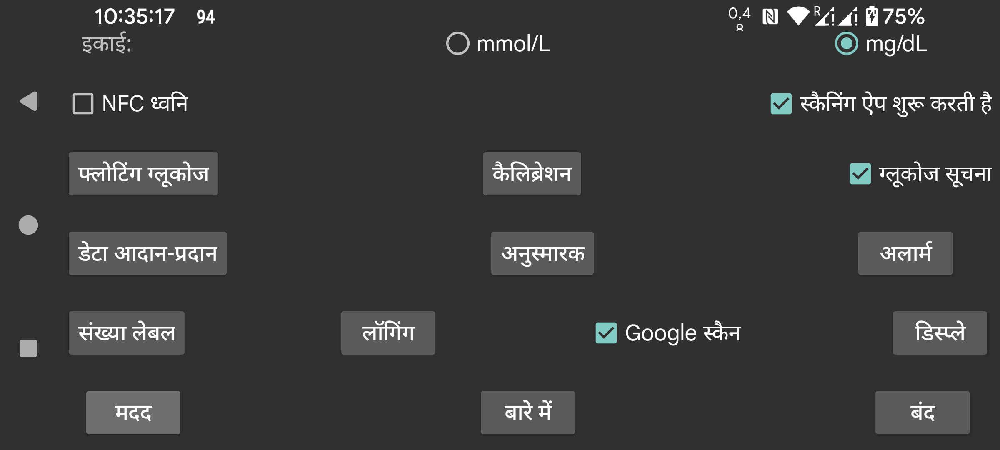

ar be de es fr hi it nl pl pt ru tr uk uz zh en
चुनें कि ग्लूकोज मान mmol/L में दिए जाएं या mg/dL में।
कंपन के अलावा स्कैनिंग के दौरान ध्वनि बनाएं।
यदि चेक किया गया है, तो जब आप NFC के माध्यम से एक सेंसर स्कैन करते हैं, तो यह ऐप शुरू हो जाएगा भले ही यह ऐप प्रदर्शित नहीं है। यदि कई ऐप्स में यह सेटिंग है, तो Android एक चयनकर्ता प्रदर्शित करेगा जिसमें से चुनें कि आप किस ऐप का उपयोग करना चाहते हैं। किसी तरह एक चुनना काम नहीं करता और अगली बार चुनने के लिए एक चुनना भी काम नहीं करता। तो इस मामले में आप अग्रभूमि में एक ऐप के बिना स्कैन नहीं कर सकते। इस ऐप में इसे बंद करने से, यह संभव हो जाएगा कि कम से कम एक ऐप इस तरह सक्रिय हो सके।
यदि आपके पास root पहुंच है, तो आप Abbott के Librelink ऐप का NFC सक्रियण भी अक्षम कर सकते हैं (Libre3 के साथ काम नहीं करता):
adb shell या termux में root बनें, और टाइप करें:
pm disable com.freestylelibre.app.nl/com.librelink.app.ui.common.NFCScanActivity
Librelink 2.7.1 और उससे कम पर आपको यह दबाना था:
pm disable com.freestylelibre.app.nl/com.librelink.app.ui.common.ScanSensorActivity
com.freestylelibre.app.nl यहाँ Librelink का डच संस्करण है, इसे आपके द्वारा उपयोग किए जा रहे संस्करण से बदला जाना चाहिए। आप इसका नाम टाइप करके पा सकते हैं (root के बिना भी):
pm list package freestylelibre
इसके बाद, आप अग्रभूमि में होने पर स्कैनिंग के लिए Librelink का उपयोग अभी भी कर सकते हैं, पर यह अन्यथा शुरू नहीं होगा। Librelink 2.5.2 और उच्चतर स्वयं क्रैश हो जाते हैं यदि वे root का पता लगाते हैं। पर Magisk में आप आसानी से Magisk का नाम बदलकर और denylist (Magisk 24.3) या Magiskhide (Magisk 23.0) में व्यक्तिगत ऐप्स जोड़कर root छिपा सकते हैं। आपको Juggluco को भी denylist में जोड़ना चाहिए। सिवाय तब जब आप US Freestyle Libre 2 सेंसर का उपयोग करते हैं, आप root जांच के बिना Librelink का एक पुराना संस्करण भी उपयोग कर सकते हैं।
root के बिना, adb shell के तहत, आप पूरे ऐप को भी अक्षम कर सकते हैं:
pm disable-user --user 0 com.freestylelibre.app.nl
Abbott ग्राहक सेवा को कॉल करने से पहले, आप इसे फिर से सक्षम कर सकते हैं:
pm enable com.freestylelibre.app.nl
(पहले "Android स्टेटस बार में ग्लूकोज" कहा जाता था)। यदि सेट है, तो ब्लूटूथ के माध्यम से स्ट्रीम हो रहे ग्लूकोज मान चुपचाप एक सूचना और Android स्टेटस बार में प्रदर्शित होते हैं। यदि आप इसे बंद करते हैं, तो एक संख्या के बजाय, एक बिंदु दिखाया जाता है और सूचना "सेंसर से जुड़ने के लिए" या "डेटा आदान-प्रदान के लिए" से अधिक कुछ नहीं बताती। पृष्ठभूमि में चलने वाला एक ऐप, Android द्वारा इस तरह की दृश्य सूचना रखने के लिए बाध्य है (अन्यथा यह Android द्वारा आसानी से बंद हो जाता है)। Juggluco केवल तब सूचना बंद करता है, जब "ब्लूटूथ के माध्यम से सेंसर" बंद होता है और कोई मिरर कनेक्शन नहीं होते।
कुछ स्मार्टफ़ोन पर, ग्लूकोज मान Android स्टेटस बार में केवल Android की सूचना सेटिंग्स बदलने के बाद ही दिखाया जाता है। Realme GT 5G पर उदाहरण के लिए, आपको applist->Juggluco->manage notifications, glucoseNotification पर टैप और "Set to Silent" बंद करना होगा। "Display in status bar" अब चालू दिखाया जाएगा।
आप बायां मध्य मेन्यू में सूचित करें का चयन करके भी एक Android सूचना प्राप्त कर सकते हैं। उस स्थिति में सूचना कुछ स्मार्टवॉच को भेजी जाएगी, यदि इसे उस तरह कॉन्फ़िगर किया गया है। यह Garmin घड़ियों के साथ काम करता है, मुझे नहीं पता कि यह किसी और चीज़ के साथ काम करता है। अलार्म भी सूचनाएं उत्पन्न करते हैं।
जब आप इसे चालू करते हैं, तो वर्तमान ग्लूकोज मान वाली एक छोटी छवि स्क्रीन पर लगातार मौजूद रहती है चाहे जो भी ऐप अग्रभूमि में हो। यदि आप इसे पहली बार चालू करते हैं, तो आपको ऐप्स की सूची पर भेजा जाएगा जिसमें आपको Juggluco को अन्य ऐप्स के ऊपर प्रदर्शित करने की अनुमति देनी होगी।
अधिक और कम ग्लूकोज अलार्म, सिग्नल हानि अलार्म और मान उपलब्ध सूचना सेट करें।
मात्राओं के लिए उपयोग किए जाने वाले लेबल निर्दिष्ट करें। एक स्क्रीन पर जाएं यह निर्धारित करने के लिए कि मात्राओं को सेट करने के लिए किन लेबल का उपयोग करना है, जैसे इंसुलिन खुराक, कार्बोहाइड्रेट उपभोग और फुटबॉल खेलने में बिताए गए घंटे। यदि आप Garmin वॉच ऐप Kerfstok का भी उपयोग करते हैं, तो ये लेबल वॉच ऐप को भेजे जाते हैं।
Juggluco से अन्य ऐप्स या सर्वरों को डेटा भेजने के विभिन्न तरीके। (घड़ियों को डेटा भेजने के लिए बायां मेन्यू->घड़ी पर जाएं।)
निर्दिष्ट करें कि यदि आपने एक निश्चित समय अवधि के भीतर एक निश्चित मात्रा में भोजन या दवा दर्ज नहीं की तो एक अलार्म बजना चाहिए।
Sibionics सेंसर पैकेजों पर और Dexcom G7/ONE+ ऐप्लिकेटर पर डेटा मैट्रिक्स और बायां मध्य मेन्यू→मिरर के QR कोड को Google code scanner से स्कैन करें। यदि अनचेक है, तो zXing का उपयोग होता है। अधिकांश डिवाइसों पर, Google स्कैन बेहतर काम करता है, पर कभी-कभी यह काम नहीं करता। जब यह एक त्रुटि के साथ विफल होता है, तो zXing हमेशा उपयोग किया जाता है, पर कभी-कभी Google स्कैन बस एक त्रुटि लौटाए बिना काम नहीं करता।
सभी प्रकार की सेटिंग्स जो इस बात से संबंधित हैं कि डेटा कैसे प्रदर्शित किया जाता है, लक्ष्य सीमा से भाषा तक।